The Jazz Theory Book by Mark Levine
Chapter 1: Basic Theory
Intervals
Figure 1-1

Ascending minor 2nd

Descending minor 2nd

Ascending major 2nd

Descending major 2nd
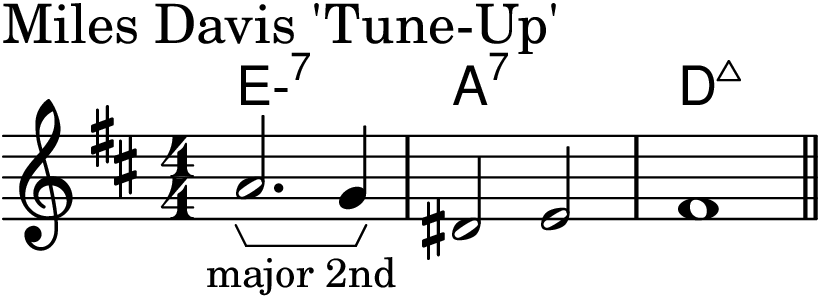
Ascending minor 3rd

Descending minor 3rd

Ascending major 3rd

Descending major 3rd
Ascending perfect 4th

Descending perfect 4th

Ascending tritone

Descending tritone
Ascending perfect 5th

Descending perfect 5th

Ascending minor 6th
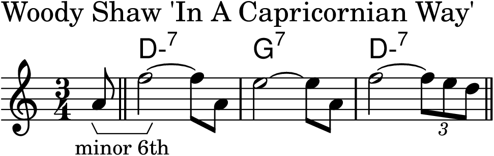
Descending minor 6th

Ascending major 6th

Descending major 6th

Ascending minor 7th
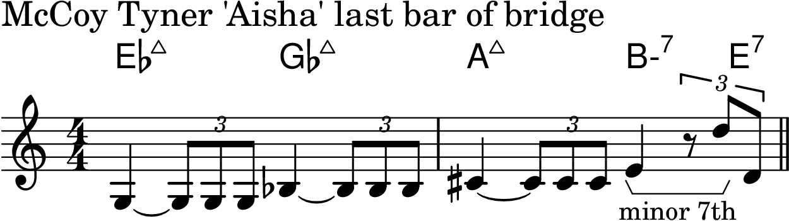
Descending minor 7th

Ascending major 7th

Descending major 7th
Ascending octave

Descending octave

Ascending minor 9th

Descending minor 9th

Ascending major 9th

Ascending major 10th
Descending 11th

Descending major 13th

Inverting Intervals
Figure 1-2

Figure 1-3
Figure 1-4

Figure 1-5

Triads
Figure 1-6

Figure 1-7

Chapter 2: The Major Scale and the II-V-I Progression
Figure 2-1

Figure 2-2

Figure 2-3
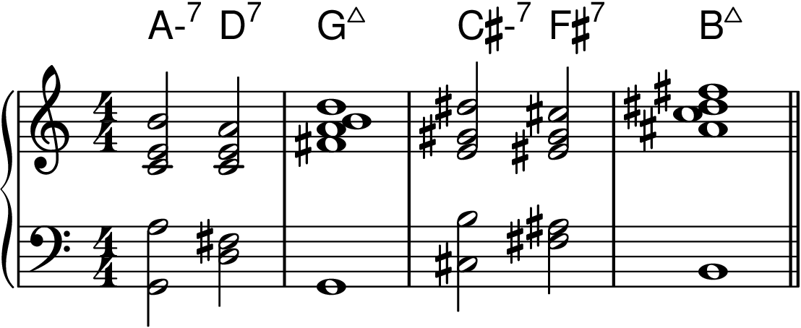
Modes of the Major Scale
Figure 2-4

The Ionian Mode and the Major 7th Chord
Figure 2-5

Figure 2-6
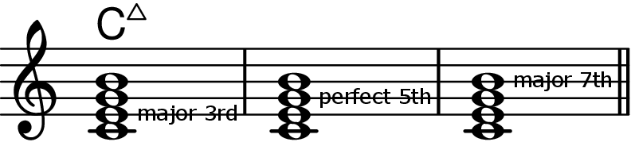
The Dorian Mode and the Minor 7th Chord
Figure 2-7

Figure 2-8

The Mixolydian Mode and the Dominant 7th Chord
Figure 2-9
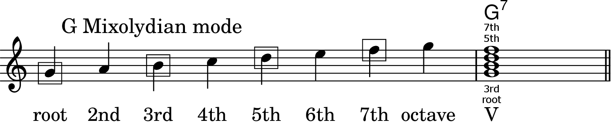
Figure 2-10

Figure 2-11

Figure 2-12

The II-V-I Progression
Figure 2-13

Figure 2-14

Figure 2-15

Figure 2-16

Voice Leading
Figure 2-17

Figure 2-18

Figure 2-19

The Cycle of Fifths
Figure 2-21
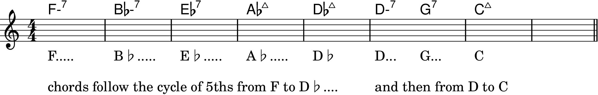
Other Common Chord Progressions
V of V
Figure 2-22

Figure 2-23

I-VI-II-V
Figure 2-24

Figure 2-25

Figure 2-26

III-VI-II-V
Figure 2-27

Figure 2-28
Figure 2-29
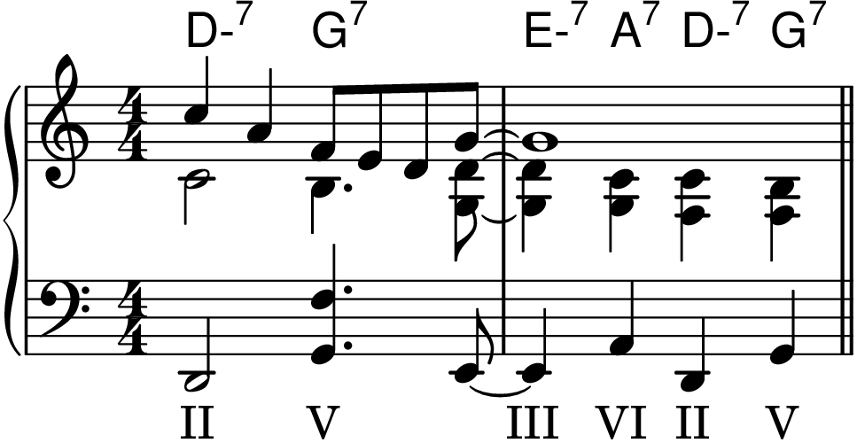
Figure 2-30

I-II-III-IV and the Lydian Mode
Figure 2-31

Figure 2-32

Figure 2-33
Figure 2-34

I-IV
Figure 2-35

Figure 2-36

Figure 2-37

The Locrian Mode and the Half-Diminished Chord
Figure 2-38

Chapter 3: Chord/Scale Theory
Why Scales?
Figure 3-1

Figure 3-2

Major Scale Harmony
Figure 3-3
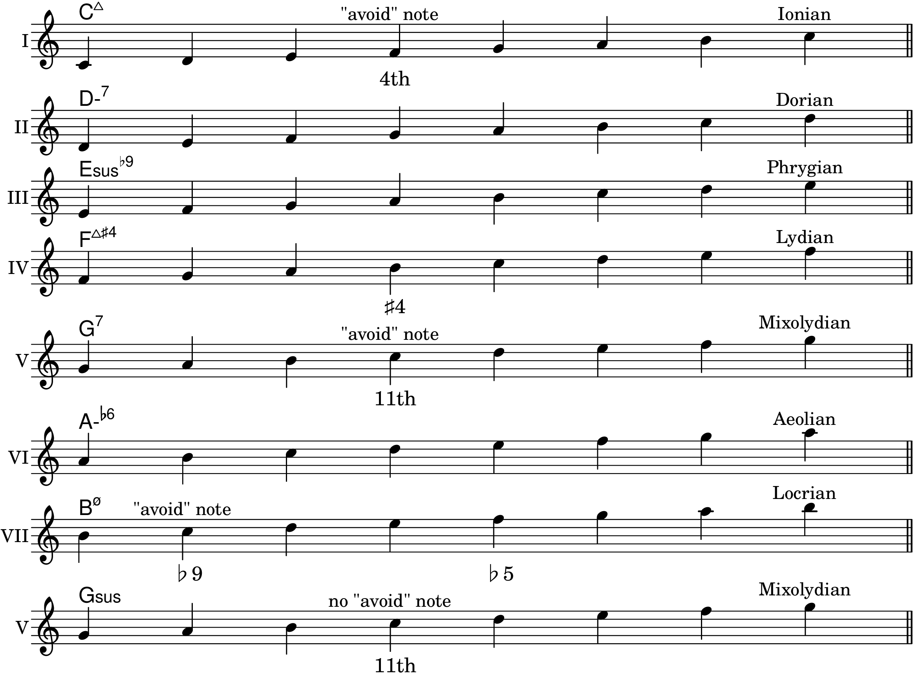
Figure 3-4

The Ionian Mode and the Major 7th Chord
Figure 3-5

Figure 3-6

Figure 3-7

"Avoid" Notes
Figure 3-8

Figure 3-9

Figure 3-10
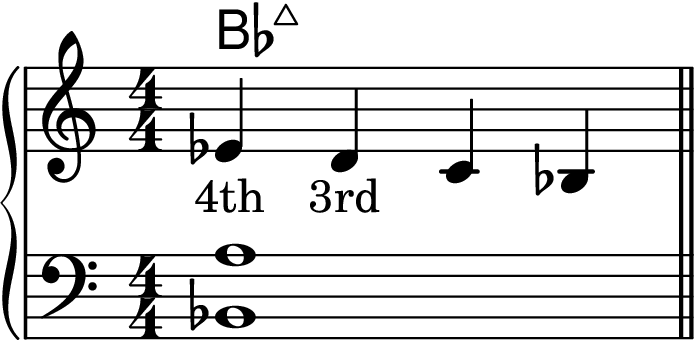
Figure 3-11

The Lydian Mode and the Major 7th♯4 Chord
Figure 3-12

Figure 3-13

Figure 3-14

Figure 3-15
Figure 3-16

Figure 3-17
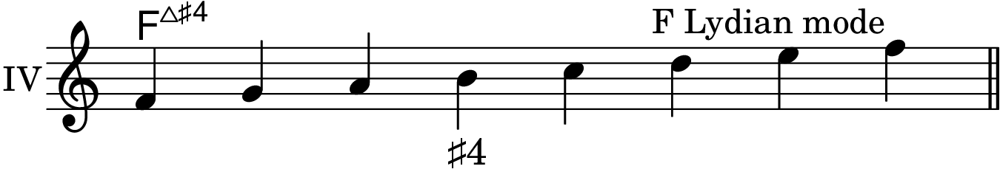
Figure 3-18
Figure 3-19

Figure 3-20
Figure 3-21
Figure 3-22
The Mixolydian Mode and the Sus Chord
Figure 3-23

Figure 3-24

Figure 3-25
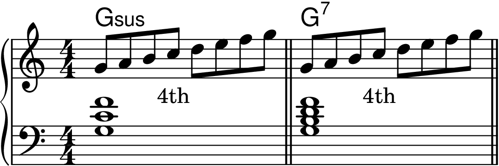
Figure 3-26

Figure 3-27
Figure 3-28

Figure 3-29

Figure 3-30
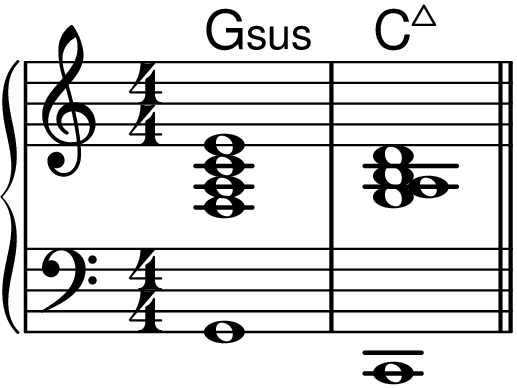
Figure 3-31

Figure 3-32

Figure 3-33
Figure 3-34
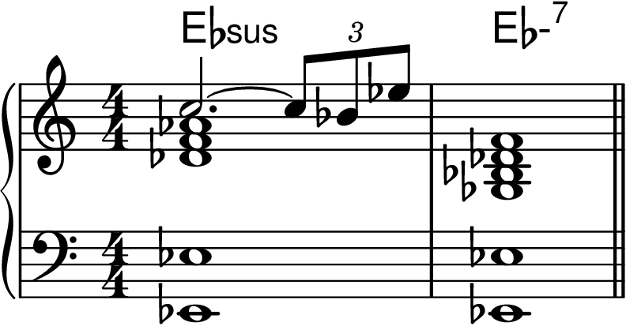
Figure 3-35

Figure 3-36
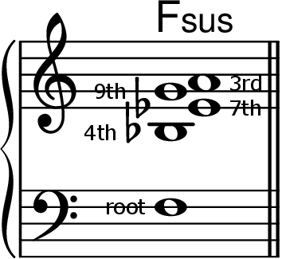
Figure 3-37
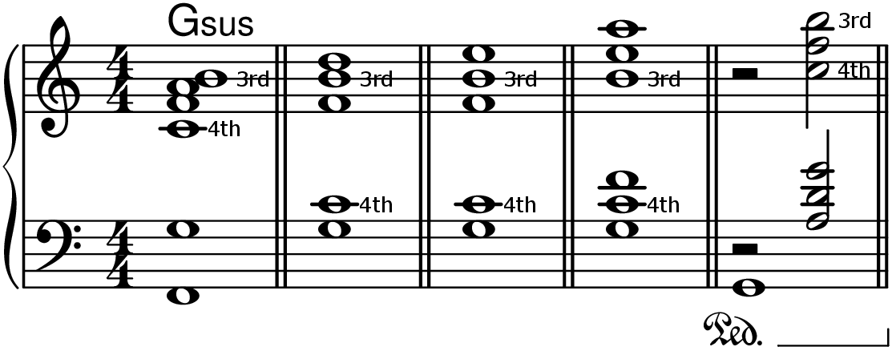
Figure 3-38

Figure 3-39

Figure 3-40

The Phrygian Mode and the Sus♭9 Chord
Figure 3-41

Figure 3-42
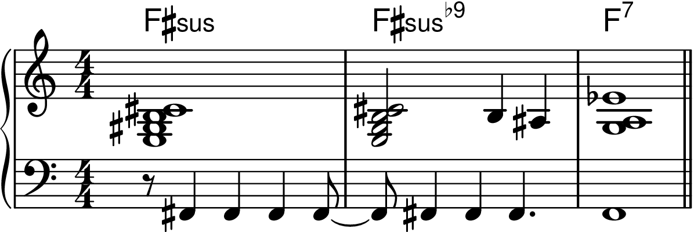
Figure 3-43
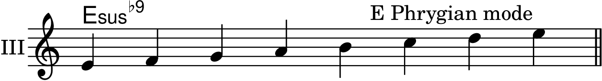
Figure 3-44

Figure 3-45
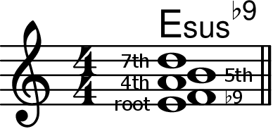
Figure 3-46

Figure 3-47
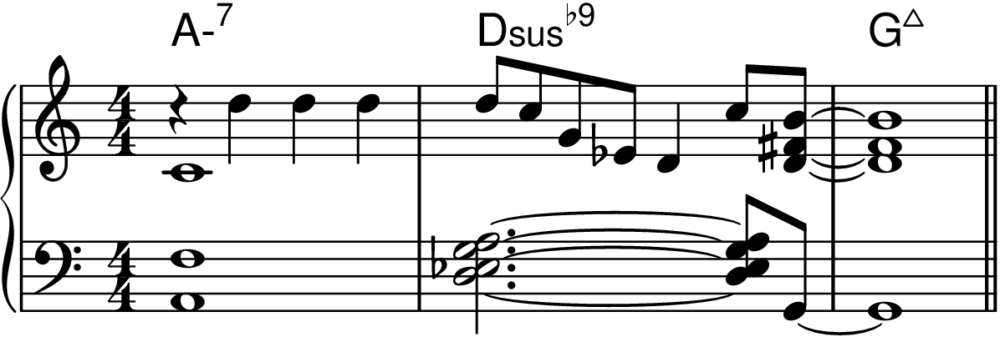
Figure 3-48

Figure 3-49
Figure 3-50

Figure 3-51

Figure 3-52
Figure 3-53

Figure 3-54

Figure 3-55

The Aeolian Mode
Figure 3-56

Figure 3-57
The Locrian Mode and the Half-Diminished Chord
Figure 3-58

Figure 3-59
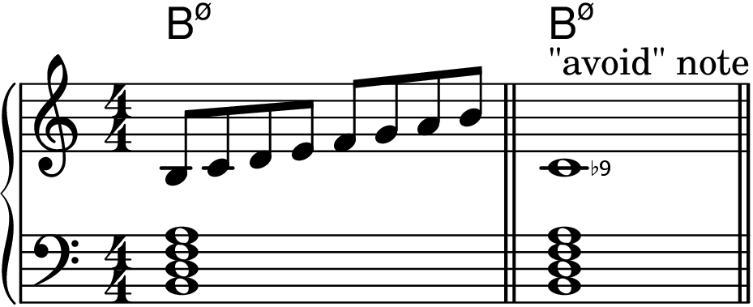
Mastering the II-V-I Progression
Figure 3-60
Figure 3-61
Melodic Minor Scale Harmony
Figure 3-62

Figure 3-63

Figure 3-64

Figure 3-65

Figure 3-66a

Figure 3-66b
The Minor-Major Chord
Figure 3-67

Figure 3-68
Figure 3-69
Figure 3-70

Figure 3-71
Figure 3-72

Figure 3-73

The Sus♭9 Chord
Figure 3-74

Figure 3-75a
Figure 3-75b
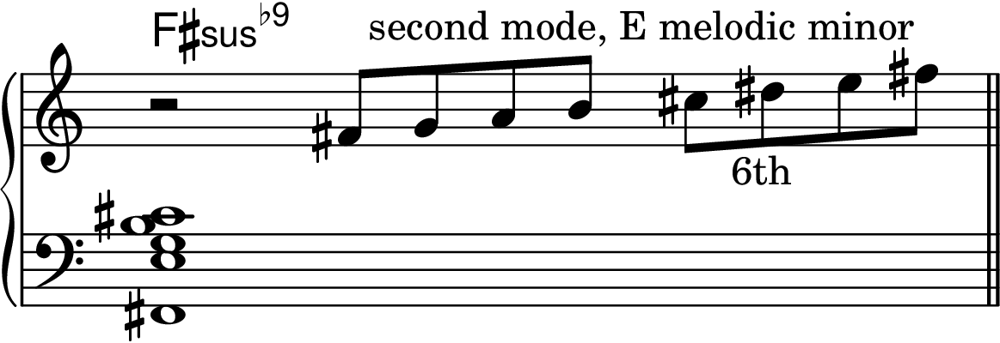
Figure 3-76

Figure 3-77
Figure 3-78
Figure 3-79

Figure 3-80

Figure 3-81
The Lydian Augmented Chord
Figure 3-82

Figure 3-83

Figure 3-84

Figure 3-85
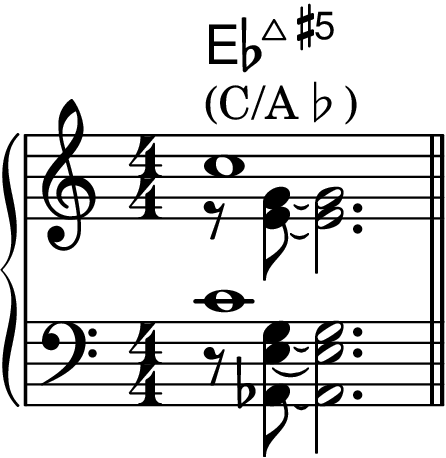
The Lydian Dominant Chord
Figure 3-86

Figure 3-87

Figure 3-88
Figure 3-89

Figure 3-90
The Fifth Mode of the Melodic Minor Scale
Figure 3-91
Figure 3-92
Figure 3-93
Figure 3-94
Figure 3-95
Figure 3-96
The Half-Diminished Chord
Figure 3-97
Figure 3-98
Figure 3-99a

Figure 3-99b
Figure 3-100

Figure 3-101
Figure 3-102
The Altered Dominant Chord
Figure 3-103

Figure 3-104
Figure 3-105a
Figure 3-105b
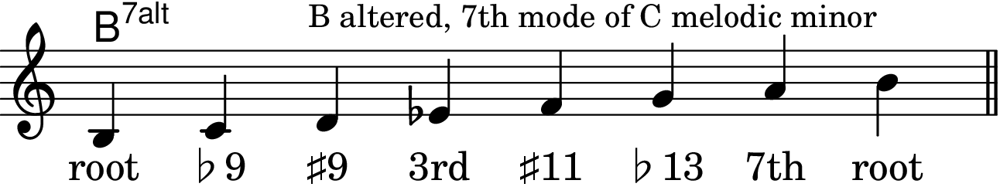
Figure 3-106
Figure 3-107
The Interchangeability of Melodic Minor Chords
Figure 3-108
Figure 3-109
Figure 3-110
The Piano is a Color-Coded Instrument
Figure 3-111
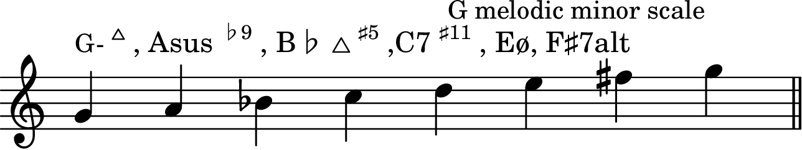
Figure 3-112
The Minor II-V-I and II-V Progressions
Figure 3-113

Figure 3-114
Figure 3-115
Figure 3-116
"Characteristic" Notes of the Melodic Minor Scale
Figure 3-117
Diminished Scale Harmony
What's a Diminished Scale
Figure 3-118
Figure 3-119
Figure 3-120a
Figure 3-120b
Figure 3-121
Figure 3-122a

Figure 3-122b

Figure 3-122c
Figure 3-122d
The Half-Step/Whole-Step Diminished Scale and the V7♭9 Chord
Figure 3-123
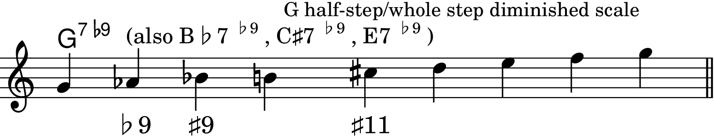
Figure 3-124
Figure 3-125
Figure 3-126
Figure 3-127
Figure 3-128
Figure 3-129
The Whole-Step/Half-Step Diminished Scale and the Diminished Chord
Figure 3-130
Figure 3-131
Figure 3-132
Figure 3-133
Figure 3-134
Figure 3-135
Figure 3-136
Figure 3-137
Figure 3-138
Figure 3-139
Figure 3-140
Some Practice Tips
Figure 3-141
Whole-Tone Scale Harmony
Figure 3-142

Figure 3-143
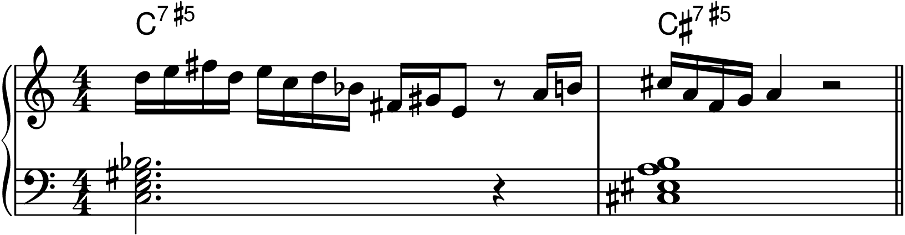
Figure 3-144

Figure 3-145

Figure 3-146
Figure 3-147
Figure 3-148

Figure 3-149
Figure 3-150
Figure 3-151

Figure 3-152
Figure 3-153

Chapter 4: How To Practice Scales
Figure 4-1

Figure 4-2

Figure 4-3

Figure 4-4

Figure 4-5

Figure 4-6

Figure 4-7
Figure 4-8
Figure 4-9
Figure 4-10
Figure 4-11

Figure 4-12
Figure 4-13
Figure 4-14
Figure 4-15

Figure 4-16
Chapter 5: Slash Chords
What are Slash Chords?
Figure 5-1

Figure 5-2
Figure 5-3

Figure 5-4
Figure 5-5
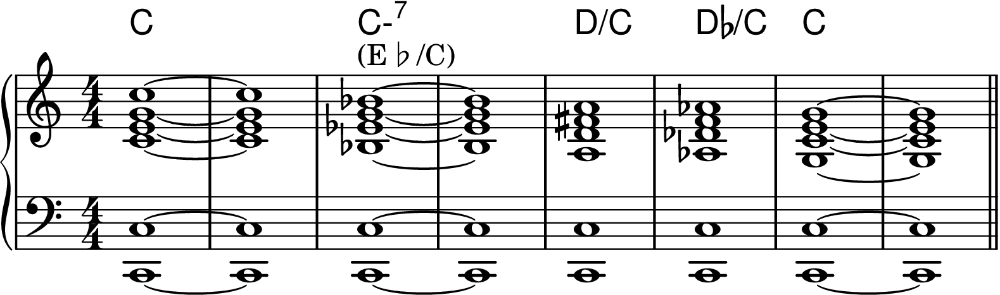
Figure 5-6

Figure 5-7
Figure 5-7
Figure 5-8

Figure 5-9
Figure 5-10

Figure 5-11
Figure 5-12

Figure 5-13
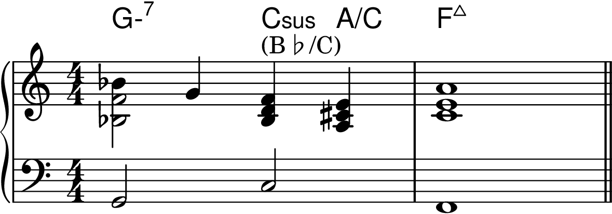
Slash Chords and Scales